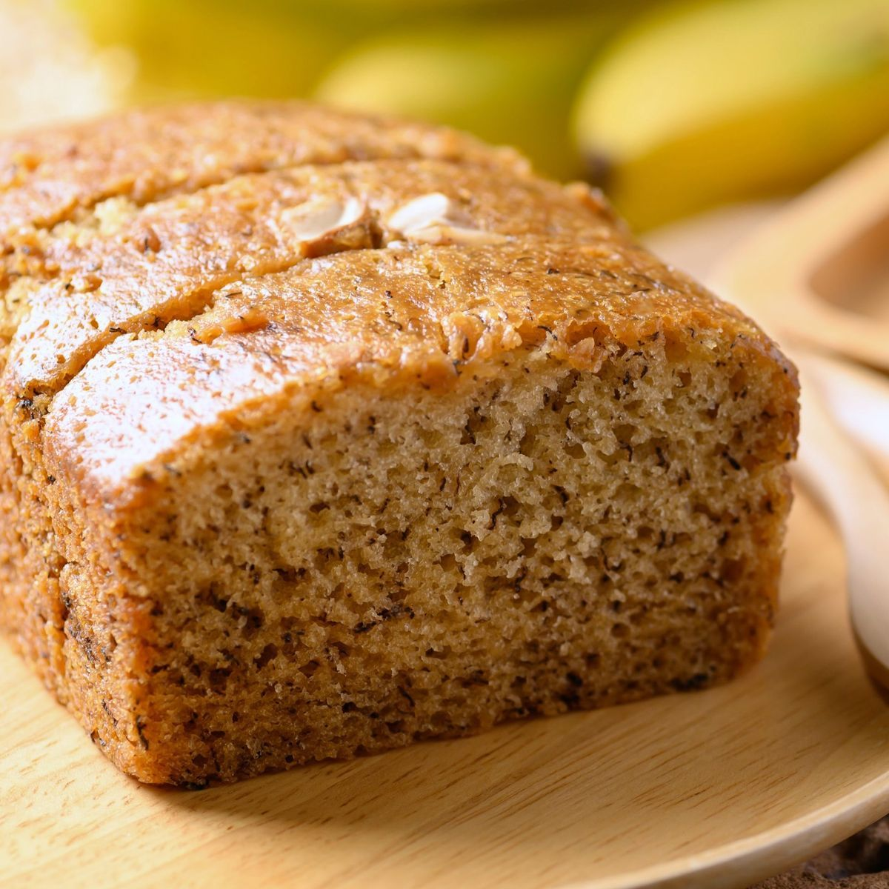

Banana Bread

A warm and delicious treat for anyone to enjoy.
This banana bread recipe is the only thing you need to enjoy a filling snack at any time of day.
It's especially helpful at finishing off those overripe bananas!
Ingredients:
- Flour
- Baking Soda
- Salt
- Butter
- Brown Sugar
- Eggs
- Bananas
Follow Along:
- Preheat your over to 350 degrees.
- Combine the dry ingredients into a mixing bowl.
- Beat the banans and sugar together into a mash,
then add the eggs into the mixture.
- Combine the wet and dry ingredients.
- Pour the batter into a loaf pan and cook for 60 minutes.